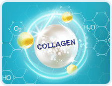

INTENSKIN
подмладяване
Перфектна кожа след първия курс на употреба
Отстъпка
-50%
за първата поръчка
Ефект
след няколко
дена!
INTENSKIN
Революция в подмладяването
Причини за застаряване на кожата
-
 Недостиг на естроген
Недостиг на естрогенЕстрогенът прави кожата гладка, стегната и с равномерен цвят. Нивото на хормона намалява с възрастта.
-
Нервност и стрес
Добрите и лошите емоции оставя своите малки следи по лицето и в крайна сметка те се превръщат в бръчки.
-
Липса на колаген
Колагенът помага на кожата да се възстановява. Неговият дефицит води до загуба на тонус и V-образна форма.
-
Влияние на околната среда
Вредните вещества във въздуха и водата запушват порите на кожата и водят до възпаление.

INTENSKIN
е №1 продукт за подмладяване
Мнения
на истински жени-
- преди
- след
Ани, 37Перфектна кожа след първия курс на употребаНямах дълбоки бръчки, но имах много малки мимически и цветът на кожата им също имаше нужда от подобрение. С крема INTENSKIN бръчките изчезват, а кожата на лицето става толкова свежа, че изглеждам под 30. -
- преди
- след
Славена, 39Перфектна кожа след първия курс на употребаКупих крема INTENSKIN не много отдавна и вече съм доволна от резултата – лицето ми се опънати, бръчките намаляха. Освен порите ми се свиха. Сега с радост се оглеждам в огледалото. И най-важното е, че резултатът става видим след два дни. -

- преди
- след
Мария, 44Перфектна кожа след първия курс на употребаСлед 40-годишна възраст кожата не е същата и не вярвах, че кремът ще помогне. Но INTENSKIN е наистина ефективен – лицето ми изглежда свежо, цветът не е толкова повехнал, а бръчките изчезнаха. Много се радвам.


козметика
козметология
и подмладяване на кожатаиновативни
решенияЕкспертите репоръчват
 INTENSKIN като продукт, доказал своята ефективност. Основното му предимство е комплексната
грижа. Кремът може да се използва както за цялостна програма за подмладяване на
кожата на лицето, така и превантивно. Бръчките са напълно изгладени, а тенът е
равномерен. Препоръчвам този крем на тези, които искат да подобрят състоянието на кожата си,
и които искат трябва да я предпазят от всякакви дефекти. В крайна сметка сухата и лющеща се
кожа може лесно да покрие с бръчки само за няколко дена и след това тяхното премахване ще е
много по-трудно.
INTENSKIN като продукт, доказал своята ефективност. Основното му предимство е комплексната
грижа. Кремът може да се използва както за цялостна програма за подмладяване на
кожата на лицето, така и превантивно. Бръчките са напълно изгладени, а тенът е
равномерен. Препоръчвам този крем на тези, които искат да подобрят състоянието на кожата си,
и които искат трябва да я предпазят от всякакви дефекти. В крайна сметка сухата и лющеща се
кожа може лесно да покрие с бръчки само за няколко дена и след това тяхното премахване ще е
много по-трудно.
Елисавета Сандева,
козметологпрепоръчват
INTENSKIN